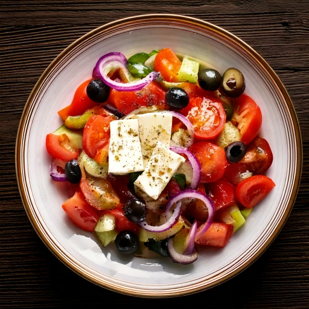

Cucumber, tomato, red onion, olives, and feta in a simple olive oil and red wine vinegar dressing.
Nutrition (per serving)
236
Calories
9g
Carbs
5g
Protein
21g
Fat
2g
Fiber
~20
Est. GI
Why this fits a diabetes-friendly diet
At 9g of carbs per serving, it fits comfortably within most low-carb diabetes meal plans, and its estimated glycemic index of ~20 means the carbs it does have tend to digest slowly rather than spiking blood sugar fast.
Ingredients
- 1 cup235 ml cucumber
- 1 cup235 ml tomato
- 1/4 cup60 ml red onion
- 1/4 cup60 ml kalamata olives
- 1/3 cup80 ml low-sodium feta cheese
- 2 tbsp30 ml olive oil
- 1 tbsp15 ml red wine vinegar
- 1/2 tsp2 ml dried oregano
Instructions
- Chop the cucumber, tomato, and red onion, and combine in a bowl.
- Add the olives and crumbled feta.
- Whisk the olive oil, vinegar, and oregano together, then toss with the salad just before serving.
In GlucoBeacon
This recipe is one of 150+ in the GlucoBeacon Recipe Library, each with full nutrition breakdown, glycemic index estimate, and one-tap logging straight to your blood sugar history. Get notified when GlucoBeacon launches →